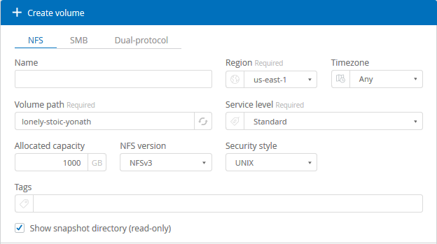
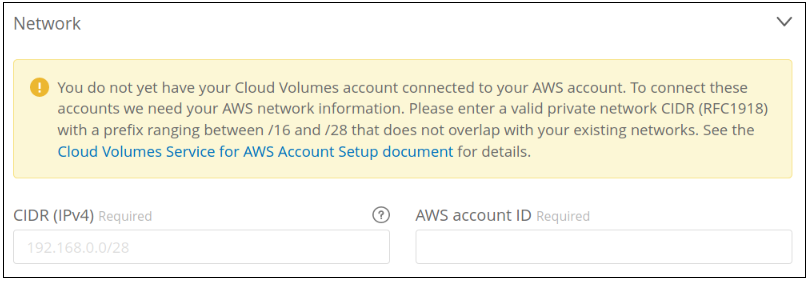
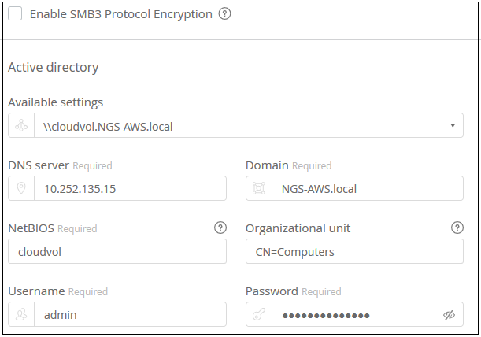
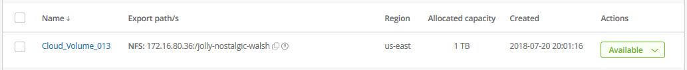

Creating a cloud volume
Contributors
 Download PDF of this page
Download PDF of this page
You create cloud volumes from the NetApp Cloud Orchestrator site.
Prerequisites
Your AWS environment must meet certain requirements before you can create your first cloud volume. For each AWS region where you plan to deploy cloud volumes, you must have a:
-
Virtual Private Cloud (VPC)
-
Virtual Private Gateway (VGW) that is connected to your VPC
-
Subnet for the VPC
-
Routes defined that include the network on which cloud volumes will run
-
Optionally, a Direct Connect Gateway
You must have the following information available when creating your first cloud volume in a region:
-
AWS account ID: A 12-digit Amazon account identifier with no dashes.
-
Classless Inter-Domain Routing (CIDR) Block: An unused IPv4 CIDR block. The network prefix must range between /16 and /28, and it must also fall within the ranges reserved for private networks (RFC 1918). Do not choose a network that overlaps your VPC CIDR allocations.
-
You must have selected the correct region where you want to use the service. See Selecting the region.
If you have not configured the required AWS networking components, see the NetApp Cloud Volumes Service for AWS Account Setup guide for details.
Note: When planning to create an SMB volume, you must have a Windows Active Directory server available to which you can connect. You will enter this information when creating the volume. Also, make sure that the Admin user is able to create a machine account in the Organizational unit (OU) path specified.
Enter volume details
Complete the fields at the top of the Create Volume page to define the volume name, size, service level, and more.
-
After you have logged in to the NetApp Cloud Orchestrator site with the email address that you provided during your subscription, and you have selected the region, click the Create new volume button.

-
From the Create Volume page, select NFS, SMB, or Dual-protocol as the protocol for the volume you want to create.
-
In the Name field, specify the name you want to use for the volume.
-
In the Region field, select the AWS region where you want to create the volume. This region must match the region you configured on AWS.
-
In the Timezone field, select your time zone.
-
In the Volume path field, specify the path you want to use or accept the automatically generated path.
-
In the Service level field, select the level of performance for the volume: Standard, Premium, or Extreme.
See Selecting the service level for details.
-
In the Allocated capacity field, select the capacity required. Note that the number of available inodes is dependent on allocated capacity.
See Selecting the allocated capacity for details.
-
In the NFS version field, select NFSv3, NFSv4.1, or Both depending on your requirements.
-
If you selected Dual-protocol, you can select the security style in the Security style field by selecting NTFS or UNIX from the drop-down menu.
Security styles affect the file permission type used and how permissions can be modified.
-
UNIX uses NFSv3 mode bits, and only NFS clients can modify permissions.
-
NTFS uses NTFS ACLs, and only SMB clients can modify permissions.
-
-
In the Show snapshot directory field, keep the default where you can view the Snapshot directory for this volume, or uncheck the box to hide the list of Snapshot copies.
Enter network details (one-time setting per AWS region)
If this is the first time you have created a cloud volume in this AWS region, the Network section is displayed so you can connect your Cloud Volumes account to your AWS account:
-
In the CIDR (IPv4) field, enter the desired IPv4 range for the region. The network prefix must range between /16 and /28. The network must also fall within the ranges reserved for private networks (RFC 1918). Do not choose a network that overlaps your VPC CIDR allocations.
-
In the AWS account ID field, enter your 12-digit Amazon account identifier with no dashes.

Enter export policy rules (optional)
If you selected NFS or Dual-protocol, you can create an export policy in the Export policy section to identify the clients that can access the volume:
-
In the Allowed clients field, specify the allowed clients by using an IP address or Classless Inter-Domain Routing (CIDR).
-
In the Access field, select Read & Write or Read only.
-
In the Protocols field, select the protocol (or protocols if the volume allows both NFSv3 and NFSv4.1 access) used for user access.

Click + Add export policy rule if you want to define additional export policy rules.
Enable data encryption (optional)
-
If you selected SMB or Dual-protocol, you can enable SMB session encryption by checking the box for the Enable SMB3 Protocol Encryption field.
Note: Do not enable encryption if SMB 2.1 clients need to mount the volume.
Integrate the volume with an Active Directory server (SMB and Dual Protocol)
If you selected SMB or Dual-protocol, you can choose to integrate the volume with a Windows Active Directory server or an AWS Managed Microsoft AD in the Active Directory section.
In the Available settings field, select an existing Active Directory server or add a new AD server.
To configure a connection to a new AD server:
-
In the DNS server field, enter the IP address(es) of the DNS server(s). Use a comma to separate the IP addresses when referencing multiple servers, for example, 172.31.25.223, 172.31.2.74.
-
In the Domain field, enter the domain for the SMB share.
When using AWS Managed Microsoft AD, use the value from the "Directory DNS name" field.
-
In the SMB Server NetBIOS field, enter a NetBIOS name for the SMB server that will be created.
-
In the Organizational unit field, enter "CN=Computers" for connections to your own Windows Active Directory server.
When using AWS Managed Microsoft AD, the Organizational unit must be entered in the format "OU=<NetBIOS_name>". For example, OU=AWSmanagedAD.
To use a nested OU you must call out the lowest level OU first up to the highest level OU. For example: OU=THIRDLEVEL,OU=SECONDLEVEL,OU=FIRSTLEVEL.
-
In the Username field, enter a username for your Active Directory server.
You can use any username that is authorized to create machine accounts in the Active Directory domain to which you are joining the SMB server.
-
In the Password field, enter the password for the AD username that you specified.

See Designing a site topology for Active Directory Domain Services for guidelines about designing an optimal Microsoft AD implementation.
See the AWS Directory service setup with NetApp Cloud Volumes Service for AWS guide for detailed instructions for using AWS Managed Microsoft AD.
You should follow the guidance on AWS security group settings to enable cloud volumes to integrate with Windows Active Directory servers correctly. See AWS security group settings for Windows AD servers for more information. Note: UNIX users mounting the volume using NFS will be authenticated as Windows user "root" for UNIX root and "pcuser" for all other users. Make sure that these user accounts exist in your Active Directory prior to mounting a dual protocol volume when using NFS.
Create a Snapshot policy (optional)
If you want to create a snapshot policy for this volume, enter the details in the Snapshot policy section:
-
Select the snapshot frequency: Hourly, Daily, Weekly, or Monthly.
-
Select the number of snapshots to keep.
-
Select the time when the snapshot should be taken.

You can create additional snapshot policies by repeating the steps above, or by selecting the Snapshots tab from the left navigation area.
Create the volume
-
Scroll down to the bottom of the page and click Create Volume.
If you have previously created a cloud volume in this region, the new volume appears in the Volumes page.
If this is the first cloud volume you have created in this AWS region and you have entered the networking information in the Network section of this page, a Progress dialog is displayed that identifies the next steps you must follow to connect the volume with AWS interfaces.

-
Accept the virtual interfaces as described in section 6.4 of the NetApp Cloud Volumes Service for AWS Account Setup guide. You must perform this task within 10 minutes or the system may time out.
If the interfaces do not appear within 10 minutes there may be a configuration issue; in which case you should contact support.
After the interfaces and other networking components are created, the volume you created appears in the Volumes page and the Actions field is listed as Available.

Continue with Mounting a cloud volume.
 Edit on GitHub
Edit on GitHub